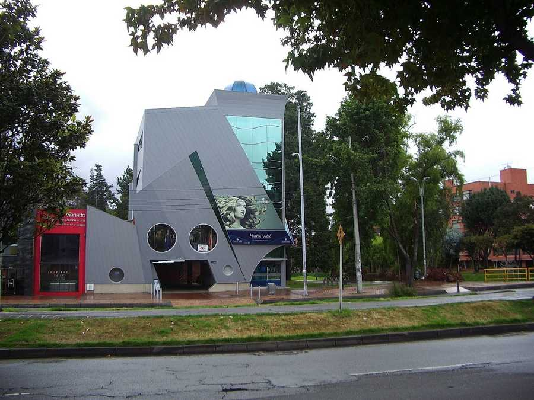

Bogo patin
Callejeando en monopatin

Bogotaneando en la carrera
19, una edificación poco común atrajo mi atención.
Se trataba de un edificio algo ciencia-fición,
fantasy, futuristico sin duda.
Al acercarme me di centa que era un salón de belleza.
Más precisamente Martin Vidal, la cadena que tiene en Bogotá
varios salones,
en edificios espectaculares.
Edificios, casas, carreteras,
publicidades, tiendas, cigarrerias,
artefactos urbanos constituyen el paisaje de la ciudad.
Recorrer esos paisajes y retratarlos
en aquellos versos
constituye nuestra meta,
meta que no es línea de llegada sino camino,
camino en sus términos emocional y físico.
A su reputación
le presté atención
y decidí deleitar
me con el famoso tinto
colombiano.
Caramba!
Es agua
negra !
Sera que el tao,
del gremio cafetero se apodero!
Al igual que Yuanming que tocaba
un laúd sin cuerda
en música silenciosa
que contiene la armonia
aún no fracturada,
beben ese café sin café
porque contiene en sí
la armonia del café en sí?
Una ausencia
que a todas la variedades las encaja?
¡Hombre!
Es demasiodo sutil
para mi perfil.
La bestia de metal
no le tiene respeto ninguno
al ser carnal
y ahora como colmo
viene la inteligencia artificial.